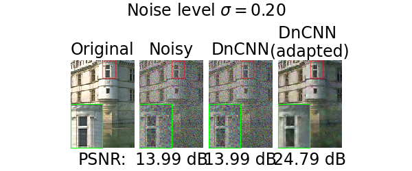
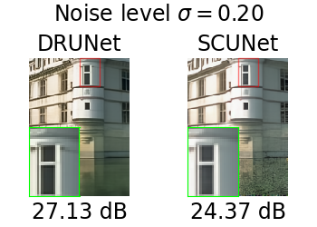

Note
New to DeepInverse? Get started with the basics with the 5 minute quickstart tutorial..
Benchmarking pretrained denoisers#
This example provides a tour of the denoisers in DeepInverse. A denoiser is a model that takes in a noisy image and outputs a denoised version of it. Basically, it solves the following problem:
The denoisers in DeepInverse comes with different flavors, depending on whether they are derived from analytical image processing techniques or learned from data. This example will show how to use the different denoisers in DeepInverse, compare their performances, and highlights the different tradeoffs they offer.
import time
import torch
import pandas as pd
import matplotlib.pyplot as plt
import deepinv as dinv
from deepinv.utils import plot_inset, load_example, zip_strict
Load test images#
First, let’s load a test image to illustrate the denoisers.
dtype = torch.float32
device = "cpu"
img_size = (173, 125)
image = load_example(
"CBSD_0010.png", grayscale=False, device=device, dtype=dtype, img_size=img_size
)
# Next, set the global random seed from pytorch to ensure reproducibility of the example.
torch.manual_seed(0)
torch.cuda.manual_seed(0)
# Finally, create a noisy version of the image with a fixed noise level sigma.
sigma = 0.2
noisy_image = image + sigma * torch.randn_like(image)
We are now ready to explore the different denoisers.
Classical Denoisers#
DeepInverse provides a set of classical denoisers such as deepinv.models.BM3D,
deepinv.models.TGVDenoiser, or deepinv.models.WaveletDictDenoiser.
They can be easily used simply by instanciating their corresponding class, and calling them with the noisy image and the noise level.
bm3d = dinv.models.BM3D()
tgv = dinv.models.TGVDenoiser()
wavelet = dinv.models.WaveletDictDenoiser()
imgs = [
image,
noisy_image,
bm3d(noisy_image, sigma),
tgv(noisy_image, sigma),
wavelet(noisy_image, sigma),
]
psnr = [dinv.metric.cal_psnr(image, im).item() for im in imgs[1:]]
titles = ["Original", "Noisy", "BM3D", "TGV", "Wavelet"]
subtitles = ["PSNR:"] + [f"{p:.2f} dB" for p in psnr]
plot_inset(
img_list=imgs,
titles=titles,
subtitles=subtitles,
suptitle=rf"Noise level $\sigma={sigma:.2f}$",
extract_size=0.2,
extract_loc=(0.5, 0.0),
inset_size=0.5,
figsize=(len(imgs) * 1.5, 2.5),
)
/local/jtachell/deepinv/deepinv/deepinv/utils/plotting.py:408: UserWarning: This figure was using a layout engine that is incompatible with subplots_adjust and/or tight_layout; not calling subplots_adjust.
fig.subplots_adjust(top=0.75)
Deep Denoisers#
DeepInverse also provides a set of deep denoisers.
Most of these denoisers are available with pretrained weights, so they can be used readily.
To instantiate them, you can simply call their corresponding class with default
parameters and pretrained="download" to load their weights.
You can then apply them by calling the model with the noisy image and the noise level.
dncnn = dinv.models.DnCNN()
drunet = dinv.models.DRUNet()
swinir = dinv.models.SwinIR()
scunet = dinv.models.SCUNet()
imgs = [
image,
noisy_image,
dncnn(noisy_image, sigma),
drunet(noisy_image, sigma),
scunet(noisy_image, sigma),
swinir(noisy_image, sigma),
]
titles = [
"Original",
"Noisy",
"DnCNN",
"DRUNet",
"SCUNet",
"SwinIR",
]
psnr = [dinv.metric.cal_psnr(image, im).item() for im in imgs[1:]]
subtitles = ["PSNR:"] + [f"{p:.2f} dB" for p in psnr]
plot_inset(
img_list=imgs,
titles=titles,
subtitles=subtitles,
suptitle=rf"Noise level $\sigma={sigma:.2f}$",
extract_size=0.2,
extract_loc=(0.5, 0.0),
inset_size=0.5,
figsize=(len(imgs) * 1.5, 2.5),
)
Downloading: "https://huggingface.co/deepinv/dncnn/resolve/main/dncnn_sigma2_color.pth?download=true" to /local/jtachell/.cache/torch/hub/checkpoints/dncnn_sigma2_color.pth
0%| | 0.00/2.56M [00:00<?, ?B/s]
100%|██████████| 2.56M/2.56M [00:00<00:00, 38.1MB/s]
/local/jtachell/deepinv/deepinv/.venv/lib/python3.11/site-packages/torch/functional.py:505: UserWarning: torch.meshgrid: in an upcoming release, it will be required to pass the indexing argument. (Triggered internally at /pytorch/aten/src/ATen/native/TensorShape.cpp:4381.)
return _VF.meshgrid(tensors, **kwargs) # type: ignore[attr-defined]
Downloading: "https://github.com/JingyunLiang/SwinIR/releases/download/v0.0/005_colorDN_DFWB_s128w8_SwinIR-M_noise15.pth" to /local/jtachell/.cache/torch/hub/checkpoints/005_colorDN_DFWB_s128w8_SwinIR-M_noise15.pth
0%| | 0.00/117M [00:00<?, ?B/s]
4%|▎ | 4.38M/117M [00:00<00:02, 40.6MB/s]
11%|█ | 12.6M/117M [00:00<00:01, 66.1MB/s]
17%|█▋ | 20.1M/117M [00:00<00:01, 64.7MB/s]
26%|██▌ | 30.1M/117M [00:00<00:01, 69.1MB/s]
34%|███■| 40.1M/117M [00:00<00:01, 61.1MB/s]
43%|████▎ | 50.1M/117M [00:00<00:01, 67.6MB/s]
50%|█████ | 59.1M/117M [00:00<00:00, 74.3MB/s]
57%|█████▋ | 66.6M/117M [00:01<00:00, 57.8MB/s]
62%|██████■| 72.9M/117M [00:01<00:00, 59.4MB/s]
68%|██████▊ | 80.1M/117M [00:01<00:00, 62.1MB/s]
77%|███████▋ | 90.1M/117M [00:01<00:00, 66.7MB/s]
83%|████████▎ | 96.8M/117M [00:01<00:00, 65.4MB/s]
88%|████████▊ | 103M/117M [00:01<00:00, 53.2MB/s]
94%|█████████▍| 110M/117M [00:01<00:00, 57.5MB/s]
100%|██████████| 117M/117M [00:01<00:00, 63.3MB/s]
Downloading: "https://huggingface.co/deepinv/scunet/resolve/main/scunet_color_real_psnr.pth?download=true" to /local/jtachell/.cache/torch/hub/checkpoints/scunet_color_real_psnr.pth
0%| | 0.00/68.6M [00:00<?, ?B/s]
1%|▏ | 896k/68.6M [00:00<00:07, 8.92MB/s]
3%|▎ | 1.75M/68.6M [00:00<00:09, 7.21MB/s]
18%|█▊ | 12.1M/68.6M [00:00<00:01, 47.6MB/s]
33%|███▎ | 22.9M/68.6M [00:00<00:00, 71.2MB/s]
44%|████■| 30.2M/68.6M [00:00<00:00, 62.4MB/s]
54%|█████▎ | 36.8M/68.6M [00:00<00:00, 60.3MB/s]
62%|██████■| 42.9M/68.6M [00:00<00:00, 59.4MB/s]
71%|███████ | 48.9M/68.6M [00:00<00:00, 58.5MB/s]
80%|███████▉ | 54.6M/68.6M [00:01<00:00, 58.0MB/s]
88%|████████▊ | 60.4M/68.6M [00:01<00:00, 58.0MB/s]
96%|█████████▌| 66.0M/68.6M [00:01<00:00, 57.5MB/s]
100%|██████████| 68.6M/68.6M [00:01<00:00, 55.1MB/s]
/local/jtachell/deepinv/deepinv/deepinv/utils/plotting.py:408: UserWarning: This figure was using a layout engine that is incompatible with subplots_adjust and/or tight_layout; not calling subplots_adjust.
fig.subplots_adjust(top=0.75)
Comparing denoisers#
As we have seen, these denoisers don’t have the same training or expected behavior depending on the noise level. Indeed, there are three classes of denoisers:
Fixed-noise level denoisers: Some denoisers are trained to be able to recover images from noisy input with a fixed noise levels. Typically, this is the case of
deepinv.models.DnCNNordeepinv.models.SwinIR.Adaptive-level denoisers: These denoisers are able to adapt to the noise level of a given image. Basically, these denoisers’ performance vary strognly with the value
sigmagiven as an input. This is typically the case fordeepinv.models.BM3D,deepinv.models.SCUNet, ordeepinv.models.DRUNet, but also for denoisers based on regularisations likedeepinv.models.WaveletDictDenoiser. A typical caveat of regularisation-based denoisers is that the second parameter doesn’t correspond tosigmabut to a threshold value, which needs to be adapted to the noise level.Blind denoisers: These denoisers estimate the level of noise in the input image to output the cleanest image possible. Example of blind denoisers are
deepinv.models.SCUNetordeepinv.models.Restormer.
Let us generate a set of noisy images with varying noise levels.
noise_levels = torch.logspace(-2, 0, 9)
noise = torch.randn((len(noise_levels), *image.shape[1:]))
noisy_images = image + noise_levels[:, None, None, None] * noise
We first record the PSNR of the noisy images.
psnr = dinv.loss.metric.PSNR()
psnr_x = psnr(noisy_images, image)
res = [
{"sigma": sig.item(), "denoiser": "Noisy", "psnr": v.item(), "time": 0.0}
for sig, v in zip_strict(noise_levels, psnr_x)
]
Then, we evaluate the various denoisers with our set of varying noise level. Note that to minimize the computation time, we evaluate the performances in batch, by passing all the noisy images at once to the denoiser, with varying noise levels for each entry in the batch.
We also store the runtime of each denoiser to evaluate the tradeoff between computation time and performances.
denoisers = {
"DRUNet": drunet,
# 'SwinIR': sinwir, # SwinIR is slow for this example, skipping it in the doc
"SCUNet": scunet,
"DnCNN": dncnn,
"BM3D": bm3d,
"Wavelet": wavelet,
}
for name, d in denoisers.items():
print(f"Denoiser {name}...", end="", flush=True)
t_start = time.perf_counter()
with torch.no_grad():
clean_images = d(noisy_images, noise_levels)
psnr_x = psnr(clean_images, image)
runtime = time.perf_counter() - t_start
res.extend(
[
{"sigma": sig.item(), "denoiser": name, "psnr": v.item(), "time": runtime}
for sig, v in zip_strict(noise_levels, psnr_x)
]
)
print(f" done ({runtime:.2f}s)")
df = pd.DataFrame(res)
Denoiser DRUNet... done (1.21s)
Denoiser SCUNet... done (2.85s)
Denoiser DnCNN... done (0.61s)
Denoiser BM3D... done (16.73s)
Denoiser Wavelet... done (0.42s)
We can now compare the performances of the different denoisers. We plot the PSNR of the denoised images as a function of the noise level for each denoiser.
styles = {
"Noisy": dict(ls="--", color="black"),
}
groups = df.groupby("denoiser")
_, ax = plt.subplots(figsize=(6, 4))
for name, g in groups:
g.plot(x=r"sigma", y="psnr", label=name, ax=ax, **styles.get(name, {}))
ax.set_xscale("log")
ax.set_xlabel(r"$\sigma$")
ax.set_ylabel("PSNR")
plt.legend(bbox_to_anchor=(1.02, 1), loc="upper left", borderaxespad=0)
plt.tight_layout()
plt.show()
We see that overall deepinv.models.DRUNet achieves the best performances for all
noise levels. It also achieves a good tradeoff between computation time and performances.
Tuning regularisation-based denoisers#
Note that the performances of denoisers that are based on regularisation,
like deepinv.models.WaveletDictDenoiser, are not well adapted to the noise level.
Indeed, the second parameter of these denoisers is th, which does not directly match the
noise level sigma. We will now show how to tune the threshold to match the noise level.
First we start by evaluating the performances of the wavelet denoiser for a grid of threshold values on the noisy images.
wavelets = dinv.models.WaveletDictDenoiser()
thresholds = torch.logspace(-3, 1, 13)
res = []
for th in thresholds:
t_start = time.perf_counter()
clean_images = wavelets(noisy_images, th.item())
runtime = time.perf_counter() - t_start
res.extend(
{
"psnr": psnr(clean_img[None], image).item(),
"sigma": sig.item(),
"th": th.item(),
"time": runtime,
}
for sig, clean_img in zip_strict(noise_levels, clean_images)
)
df_wavelet = pd.DataFrame(res)
We can now display how the performances vary with the value of the threshold, and what is the best threshold for each noise level. sphinx_gallery_thumbnail_number = 3
groups = df_wavelet.groupby("sigma")[["sigma", "psnr", "th"]]
best_th_psnr = groups.apply(lambda g: g.loc[g["psnr"].idxmax()])
fig, axes = plt.subplots(1, 2, figsize=(15, 4))
cmap = plt.get_cmap("viridis")
norm = plt.cm.colors.LogNorm(
vmin=df_wavelet["sigma"].min(), vmax=df_wavelet["sigma"].max()
)
for sig, group in groups:
group.plot(x="th", y="psnr", ax=axes[0], color=cmap(norm(sig)), label=None)
axes[0].set_xscale("log")
axes[0].set_ylabel("Threshold")
axes[0].set_ylabel("PSNR")
axes[0].legend([])
fig.colorbar(
plt.cm.ScalarMappable(norm=norm, cmap=cmap),
label=r"$\sigma$",
location="top",
ax=axes[0],
)
axes[1].set_title("Best threshold for each noise level")
axes[1].loglog(best_th_psnr["sigma"], best_th_psnr["th"], marker="o")
axes[1].set_xlabel(r"$\sigma$")
axes[1].set_ylabel(r"Best threshold")
plt.tight_layout()
With this tuning, we can update our comparison of the different denoisers to account for
the performances of deepinv.models.WaveletDictDenoiser once the threshold have been tuned
merge_df = best_th_psnr.reset_index(drop=True).drop(columns="th")
merge_df["denoiser"] = "Wavelet (tuned)"
merge_df = pd.concat([df.query("denoiser != 'Wavelet'"), merge_df])
_, ax = plt.subplots(figsize=(6, 4))
for name, g in merge_df.groupby("denoiser"):
g.plot(x=r"sigma", y="psnr", label=name, ax=ax, **styles.get(name, {}))
ax.set_xscale("log")
ax.set_xlabel(r"$\sigma$")
ax.set_ylabel("PSNR")
plt.legend(bbox_to_anchor=(1.02, 1), loc="upper left", borderaxespad=0)
plt.tight_layout()
Adapting fixed-noise level denoisers#
For fixed-noise level denoiser, we also see poor performances, since these models were trained for a given noise level which does not correspond to the noise level of the input image. See pretrained-weights for more details on the chose noise level. A way to improve the performance of these models is to artificially rescale the input image to match the training noise level. We can define a wrapper that automatically applies this rescaling.
class AdaptedDenoiser:
r"""
This function rescales the input image to match the noise level of the model,
applies the denoiser, and then rescales the output to the original noise level.
"""
def __init__(self, model, sigma_train):
self.model = model
self.sigma_train = sigma_train
def __call__(self, image, sigma):
if isinstance(sigma, torch.Tensor):
# If sigma is a tensor, we assume it is one value per element in the batch
assert len(sigma) == image.shape[0]
sigma = sigma[:, None, None, None]
# Rescale the output to match the original noise level
rescaled_image = image / sigma * self.sigma_train
with torch.no_grad():
output = self.model(rescaled_image, self.sigma_train)
output = output * sigma / self.sigma_train
return output
# Apply to DnCNN and SwinIR
sigma_train_dncnn = 2.0 / 255.0
adapted_dncnn = AdaptedDenoiser(dncnn, sigma_train_dncnn)
# Apply SwinIR
# sigma_train_swinir = 15.0 / 255.0
# adapted_swinir = AdaptedDenoiser(swinir, sigma_train_swinir)
# sphinx_gallery_multi_image = "single"
imgs = [
image,
noisy_image,
dncnn(noisy_image, sigma),
adapted_dncnn(noisy_image, sigma),
]
titles = ["Original", "Noisy", "DnCNN", "DnCNN \n(adapted)"]
psnr_list = [dinv.metric.cal_psnr(image, im).item() for im in imgs[1:]]
subtitles = ["PSNR:"] + [f"{p:.2f} dB" for p in psnr_list]
plot_inset(
img_list=imgs,
titles=titles,
subtitles=subtitles,
suptitle=rf"Noise level $\sigma={sigma:.2f}$",
extract_size=0.2,
extract_loc=(0.5, 0.0),
inset_size=0.5,
figsize=(len(imgs) * 1.5, 2.5),
)
imgs = [drunet(noisy_image, sigma), scunet(noisy_image, sigma)]
titles = ["DRUNet", "SCUNet"]
psnr_list = [dinv.metric.cal_psnr(image, im).item() for im in imgs]
subtitles = [f"{p:.2f} dB" for p in psnr_list]
plot_inset(
img_list=imgs,
titles=titles,
subtitles=subtitles,
suptitle=rf"Noise level $\sigma={sigma:.2f}$",
extract_size=0.2,
extract_loc=(0.5, 0.0),
inset_size=0.5,
tight=False,
figsize=(len(imgs) * 1.75, 2.5),
)
- 
- 
/local/jtachell/deepinv/deepinv/deepinv/utils/plotting.py:408: UserWarning: This figure was using a layout engine that is incompatible with subplots_adjust and/or tight_layout; not calling subplots_adjust.
fig.subplots_adjust(top=0.75)
We can finally update our comparison with the adapted denoisers for DnCNN and SwinIR.
adapted_denoisers = {
# "SwinIR": adapted_swinir, # SwinIR is slow for this example, skipping it in the doc
"DnCNN (adapted)": adapted_dncnn,
}
res = []
for name, d in adapted_denoisers.items():
print(f"Denoiser {name}...", end="", flush=True)
t_start = time.perf_counter()
with torch.no_grad():
clean_images = d(noisy_images, noise_levels)
psnr_x = psnr(clean_images, image)
runtime = time.perf_counter() - t_start
res.extend(
[
{"sigma": sig.item(), "denoiser": name, "psnr": v.item(), "time": runtime}
for sig, v in zip_strict(noise_levels, psnr_x)
]
)
print(f" done ({runtime:.2f}s)")
df_adapted = pd.DataFrame(res)
merge_df = pd.concat(
[merge_df.query("~denoiser.isin(['DnCNN', 'SwinIR'])"), df_adapted]
)
_, ax = plt.subplots(figsize=(6, 4))
for name, g in merge_df.groupby("denoiser"):
g.plot(x=r"sigma", y="psnr", label=name, ax=ax, **styles.get(name, {}))
ax.set_xscale("log")
ax.set_xlabel(r"$\sigma$")
ax.set_ylabel("PSNR")
plt.legend(bbox_to_anchor=(1.02, 1), loc="upper left", borderaxespad=0)
plt.tight_layout()
plt.show()
Denoiser DnCNN (adapted)... done (0.34s)
We can see that the adapted denoisers achieve better performances than the original ones, but they are still not as good as DRUNet which is trained for a wide range of noise levels.
Finally, we can also compare the tradeoff between computation time and performances of the different denoisers.
fig = plt.figure(figsize=(12, 6))
grid = plt.GridSpec(2, 2, height_ratios=[0.25, 0.75])
for i, sig in enumerate(noise_levels[[0, 4]]):
ax = fig.add_subplot(grid[1, i])
to_plot = merge_df.query(f"sigma == {sig}")
handles = []
for name, g in to_plot.groupby("denoiser"):
handles.append(ax.scatter(g["time"], g["psnr"], label=name))
ax.set_title(rf"$\sigma={sig:.2f}$")
ax.set_xscale("log")
ax.set_xlabel("Time (s)")
ax.set_ylabel("PSNR")
ax_legend = fig.add_subplot(grid[0, :])
ax_legend.legend(handles=handles, ncol=3, loc="center")
ax_legend.set_axis_off()
We see that depending on the noise-level, the tadeoff between computation time and performances changes, with the deep denoisers performing the best
Total running time of the script: (1 minutes 9.759 seconds)